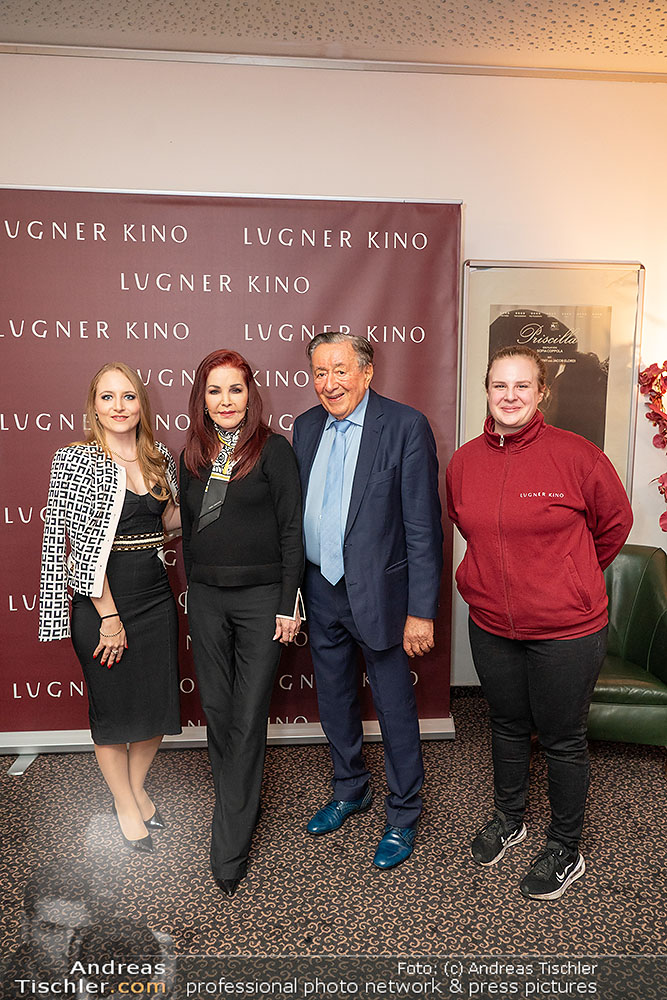

About me
| Name | Alexandra Maria Fischer |
| Geburtstag | 13. Mai |
| Geburtsort | Steyr Oberösterreich |
| Führerschein | Klasse B |
| Wohnort | Wien - Favoriten |
Schulbildung
- HTL Spengergasse seit 2025
- FiT Frauen in Handwerk und Technik 2025
- Höhere Lehranstalt für wirtschaftliche Berufe in Haag, NÖ 2005-2010
Beruflicher Werdegang
- Lugner Kino 2015-2025
- Post Sozial Bad Ischl 2012-2015
- Saison Katrin Alm Bad Ischl 2012
- Saison Konditorei Zauner Bad Ischl 2012
- EurothermenResort Bad Ischl 2010-2012
Sprachkenntnisse
- Deutsch (Muttersprache)
- Englisch (sehr gut in Wort und Schrift)
- Französisch (erweiterte Grundkenntnisse)
Freizeitgestaltung
- Akkordzither spielen
- Wandern
- Konzert- und Theaterbesuche
- Kreatives Gestalten
- Mithelfen am elterlichen Bauernhof
Website Spengergasse
Bild mit Priscilla Presley und den Lugners
